Genuine application screenshots from the dedicated API 35 AVD Rainbow_R3B_API35, serial emulator-5554. Tablet dimensions are emulator viewport overrides, not physical tablet tests. Captures use the original PNG pixels and are not composed mockups.
Habitat chooser
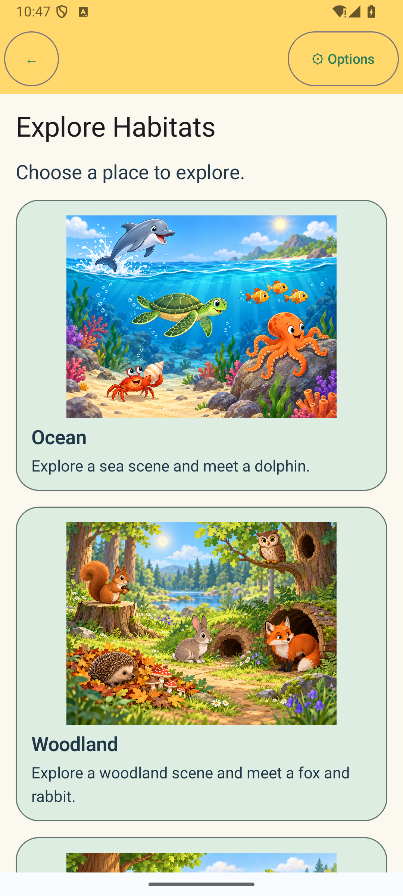
Chooser · English · four active habitats, top viewport · phone portrait, 1×. Freshwater is below the initial viewport and remains reachable by scrolling.
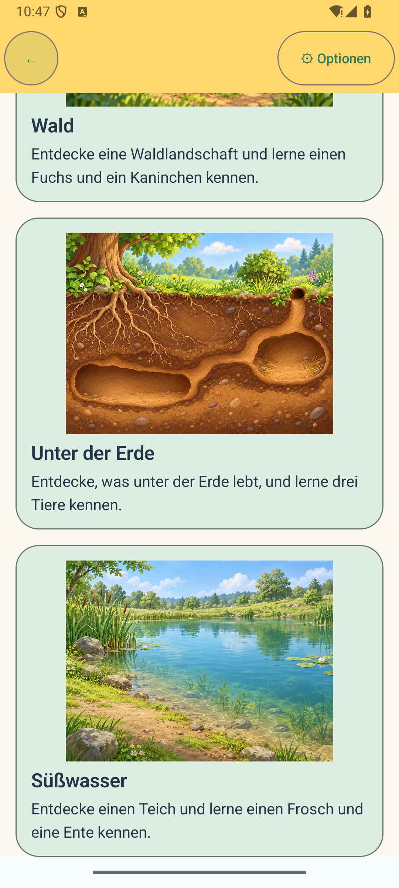
Return to chooser · German · Freshwater route exit · phone portrait, 1×.
Freshwater Explore
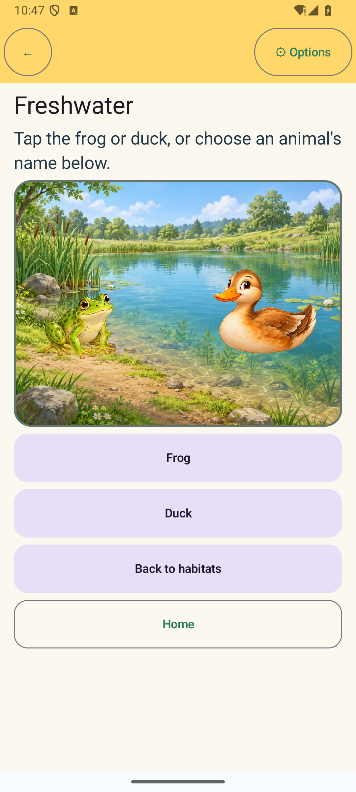
Freshwater · English · initial, no animal selected · phone portrait, 1×.
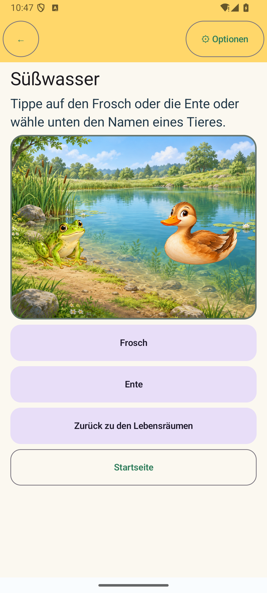
Süßwasser · German · initial, no animal selected · phone portrait, 1×.
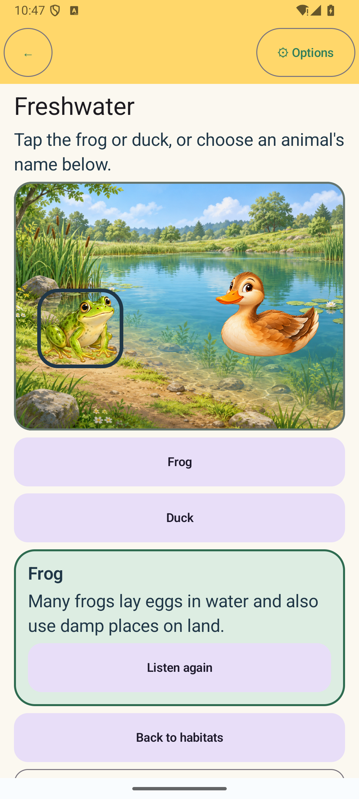
Freshwater · English · Frog selected with aligned outline, reviewed fact and Replay · phone portrait, 1×.
Freshwater · English · Duck selected; outline encloses the floating illustration · phone portrait, 1×.Süßwasser · German · Ente selected · phone portrait, 1×.Freshwater · English · Frog-to-Duck selection replacement · phone portrait, 1×.
Bilingual, enlarged text, restoration and Options
Freshwater · English · selected animal restored after normal Activity recreation · phone portrait, 1×.
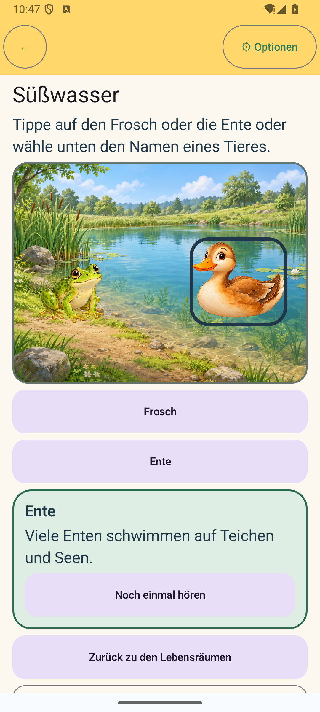
Süßwasser · German · Duck selection retained after changing language in Options · phone portrait, 1×.
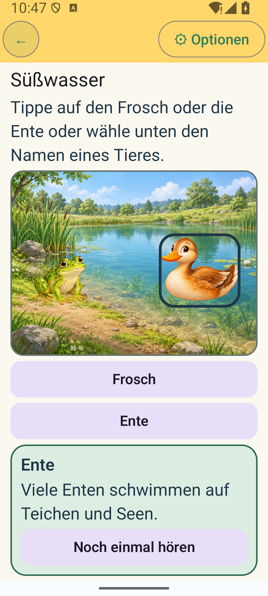
Süßwasser · German · selected Ente and Replay · phone portrait, 1.5× font. Text wraps naturally and remains legible.
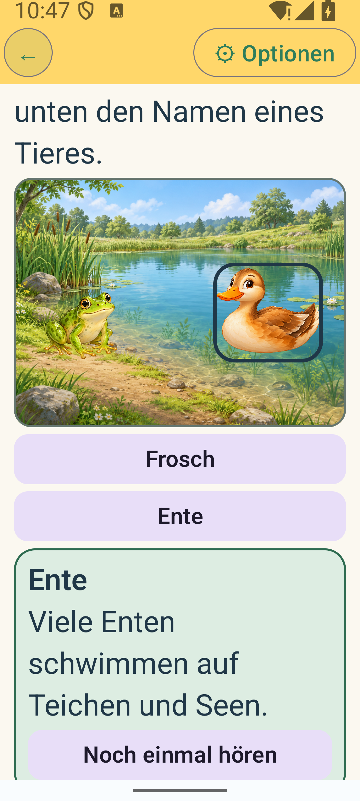
Süßwasser · German · selected Ente, enlarged text · phone portrait, 2× font. Scroll position is lower in the content; the fact and Replay remain reachable by scrolling.
Responsive emulator viewports
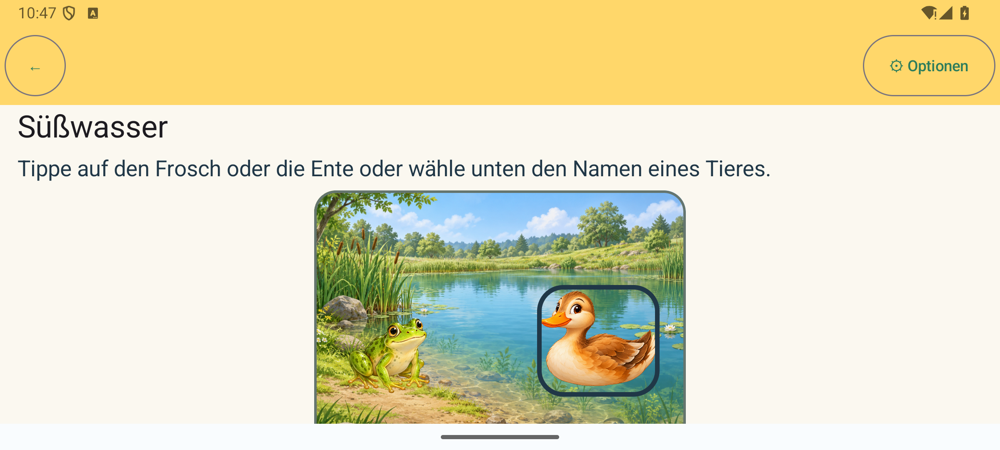
Freshwater · German · selected Ente · phone landscape, 2400×1080, 1×. Fitted scene retains its 4:3 ratio; content scrolls vertically.
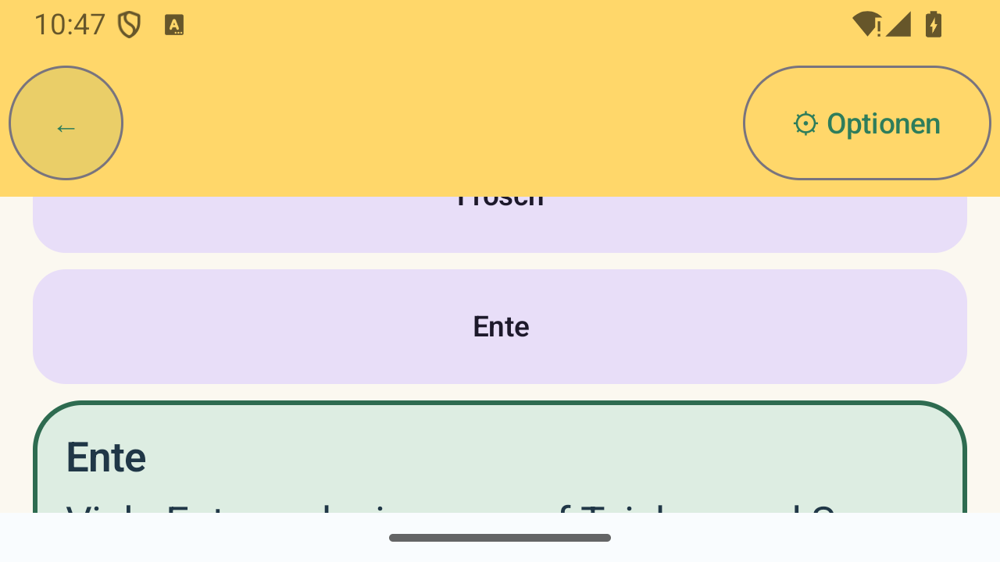
Süßwasser · German · selected Ente · short landscape, 1280×720, 1×. Instruction/control content requires vertical scrolling; Replay was scrolled into view for this capture.
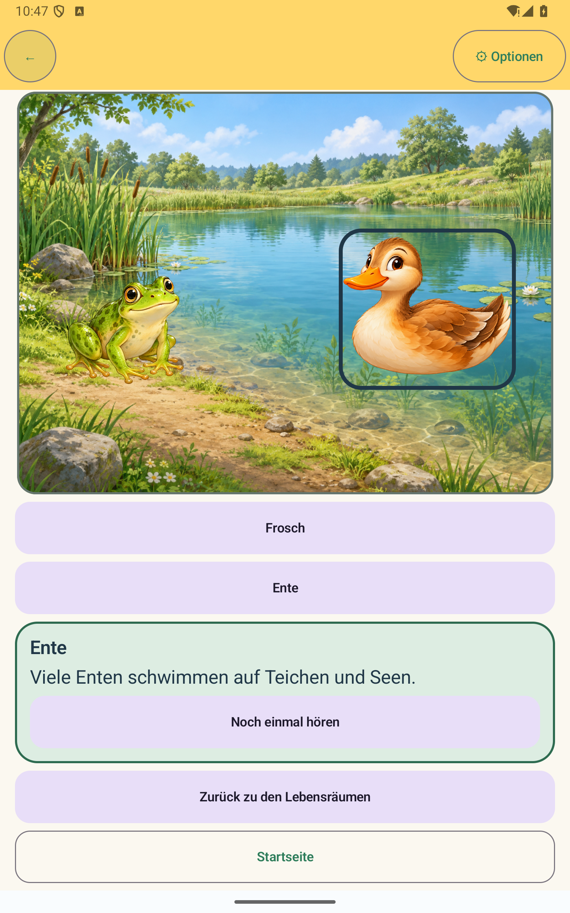
Süßwasser · German · selected Ente · tablet portrait emulator override, 1600×2560, 1×. Scene and controls use available vertical space without distortion.
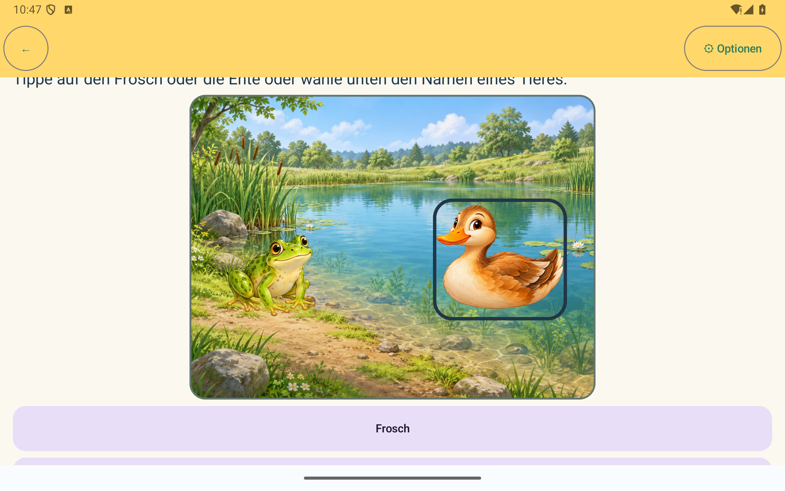
Süßwasser · German · selected Ente · tablet landscape emulator override, 2560×1600, 1×. Fitted scene remains centered and correctly proportioned; page can scroll.